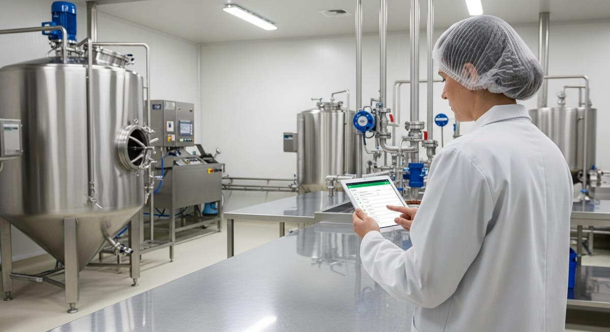

Qué son los prerrequisitos (PPR) del APPCC

Qué son los prerrequisitos (PPR) del APPCC
Cuando hablamos de seguridad alimentaria en la industria alimentaria, solemos poner el foco en el sistema APPCC. Sin embargo, antes de que ese sistema pueda funcionar de forma eficaz, existe una capa fundamental que lo sustenta: los prerrequisitos PPR. Sin unos programas de prerrequisitos bien establecidos, cualquier plan APPCC queda expuesto a fallos estructurales que ningún punto de control crítico puede compensar. En este artículo te explicamos qué son, cómo se clasifican y cómo puedes gestionarlos de manera eficiente.
¿Qué son los prerrequisitos (PPR)?
Los prerrequisitos (PPR) son el conjunto de condiciones y actividades básicas que una empresa alimentaria debe tener bajo control antes de implantar su sistema APPCC. Crean un entorno de trabajo higiénico que minimiza la probabilidad de que aparezcan peligros en los alimentos, desde la limpieza hasta la formación del personal.
Los prerrequisitos PPR son el conjunto de condiciones y actividades básicas que una empresa alimentaria debe tener bajo control antes de diseñar e implantar su sistema de Análisis de Peligros y Puntos de Control Crítico (APPCC). Su misión es crear un entorno de trabajo higiénico y seguro que minimice la probabilidad de que aparezcan peligros en los alimentos.
Una analogía útil: imagina que el APPCC es un edificio. Los PPR son los cimientos. Por muy sofisticada que sea la estructura superior, si los cimientos son débiles, todo el edificio tambalea. Así, los planes de prerrequisitos no son un trámite burocrático, sino la garantía de que los procesos de producción parten de condiciones higiénicas adecuadas.
El marco legal europeo obliga a los operadores de empresa alimentaria a implantar y mantener estos programas. Tal y como establece el Reglamento (CE) n.º 852/2004, relativo a la higiene de los productos alimenticios (Reglamento [CE] 852/2004, 2004), todas las empresas deben aplicar procedimientos basados en los principios del APPCC, lo que implica necesariamente contar con unas condiciones previas —los PPR— que garanticen la higiene en cada etapa de la cadena alimentaria.
En términos prácticos, los programas de prerrequisitos abarcan desde la limpieza de instalaciones hasta la formación del personal, pasando por el control del agua o el mantenimiento de equipos. Son transversales a todo el proceso productivo y su correcta gestión reduce significativamente la carga de peligros que el APPCC tendrá que analizar.
Tipos de prerrequisitos PPR más habituales en la industria alimentaria
Aunque los PPR pueden variar según el tipo de empresa y el sector, existen una serie de programas de prerrequisitos que son comunes a prácticamente cualquier instalación alimentaria. Veamos los más relevantes:
| Tipo de PPR | Qué controla |
|---|---|
| Limpieza y desinfección | Procedimientos, productos, concentraciones, frecuencias y responsables de limpiar instalaciones, equipos y superficies |
| Control de plagas | Medidas preventivas y reactivas ante insectos, roedores u otros vectores |
| Formación e higiene del personal | Capacitación en higiene, buenas prácticas de manipulación y uso de EPIs |
| Mantenimiento de instalaciones y equipos | Mantenimiento preventivo y correctivo para evitar peligros físicos, químicos o microbiológicos |
| Control del agua | Potabilidad y controles analíticos periódicos de calidad microbiológica y química |
| Gestión de alérgenos y control de proveedores | Prevención de contaminación cruzada y materias primas en condiciones seguras |
| Trazabilidad y gestión de residuos | Rastreo del producto en la cadena y eliminación de residuos que evite contaminaciones |
Diferencia entre PPR y PPRo (prerrequisitos operativos)
Una confusión habitual entre los responsables de calidad es distinguir entre los PPR estándar y los denominados prerrequisitos operativos PPRo. La diferencia es sutil pero relevante, especialmente cuando se trabaja bajo normas como la ISO 22000 (ISO, s.f.).
Los PPR generales controlan condiciones del entorno de producción de forma global. Su incumplimiento genera una situación de riesgo, pero no está directamente vinculado a un peligro específico identificado en el análisis de peligros. Por ejemplo, un plan de limpieza general de suelos o un programa de formación básica.
Los PPRo (prerrequisitos operativos), en cambio, son medidas de control identificadas durante el análisis de peligros que no gestionan puntos de control crítico (PCC), pero sí controlan peligros significativos en un paso concreto del proceso. La diferencia clave respecto a un PCC es que en el PPRo no existe un límite crítico mensurable con la misma precisión, aunque sí hay criterios de acción definidos.
En la práctica, los prerrequisitos operativos PPRo actúan como una categoría intermedia entre los PPR generales y los PCC del APPCC. Son medidas más específicas y vinculadas a pasos concretos del proceso productivo. Su correcta identificación y documentación es esencial para que el sistema APPCC sea robusto y no quede sobrecargado con un exceso de puntos críticos difíciles de gestionar.
Cómo documentar y verificar los PPR sin papel con Solved
Uno de los mayores retos para los responsables de calidad no es saber qué PPR aplicar, sino gestionarlos de forma eficiente en el día a día. La documentación en papel, los registros manuales y los archivos dispersos hacen que la verificación sea lenta, propensa a errores y difícil de auditar.
Solved es un software de calidad diseñado específicamente para la industria alimentaria que permite digitalizar y centralizar toda la gestión de los planes de prerrequisitos. Con Solved puedes:
Crear y asignar planes de prerrequisitos de forma estructurada: Define cada PPR con sus tareas, responsables, frecuencias y evidencias requeridas. Todo queda registrado de forma digital, accesible desde cualquier dispositivo.
Registrar incidencias y desviaciones en tiempo real: Cuando un operario detecta una no conformidad durante la ejecución de un PPR, puede registrarla al instante desde su dispositivo. Esto agiliza la toma de decisiones y evita que los problemas queden ocultos en registros de papel.
Verificar el cumplimiento con trazabilidad total: Los responsables de calidad pueden consultar el historial completo de ejecución de cada plan, con fechas, responsables y evidencias fotográficas si se requieren. Preparar una auditoría deja de ser un proceso de horas para convertirse en una cuestión de minutos.
Conectar los PPR con el APPCC y los PPRo: Solved permite vincular los programas de prerrequisitos con el análisis de peligros, de manera que el sistema de gestión de la seguridad alimentaria queda integrado y coherente.
En definitiva, los prerrequisitos PPR son la infraestructura invisible que hace posible un APPCC eficaz. Tratarlos como un sistema vivo, bien documentado y fácilmente verificable no es solo una exigencia legal, sino una ventaja competitiva real para cualquier empresa alimentaria que quiera producir con garantías y superar auditorías sin sobresaltos.
Preguntas frecuentes sobre los prerrequisitos PPR
¿Qué son los prerrequisitos PPR?
El conjunto de condiciones y actividades básicas que una empresa alimentaria debe tener bajo control antes de implantar su sistema APPCC, para crear un entorno de trabajo higiénico y seguro.
¿Qué tipos de PPR existen?
Entre otros: limpieza y desinfección, control de plagas, formación e higiene del personal, mantenimiento de instalaciones y equipos, control del agua, gestión de alérgenos y proveedores, y trazabilidad y residuos.
¿Cuál es la diferencia entre PPR y PPRo?
Los PPR generales controlan condiciones del entorno de producción de forma global. Los PPRo (prerrequisitos operativos) son medidas identificadas en el análisis de peligros que controlan un peligro significativo en un paso concreto del proceso.
¿Son obligatorios los PPR por ley?
Sí. El Reglamento (CE) n.º 852/2004 obliga a los operadores de empresa alimentaria a aplicar procedimientos basados en los principios del APPCC, lo que exige contar con PPR que garanticen la higiene en cada etapa.
¿Qué pasa si no se cumplen los PPR?
Cualquier plan APPCC queda expuesto a fallos estructurales que ningún punto de control crítico puede compensar, por muy bien diseñado que esté.
Referencias
- Organizacion Internacional de Normalizacion. (s.f.). ISO 22000 e ISO 9001. https://www.iso.org/
- Reglamento (CE) n.o 852/2004 del Parlamento Europeo y del Consejo, de 29 de abril de 2004, relativo a la higiene de los productos alimenticios. (2004). https://eur-lex.europa.eu/eli/reg/2004/852/oj?locale=es